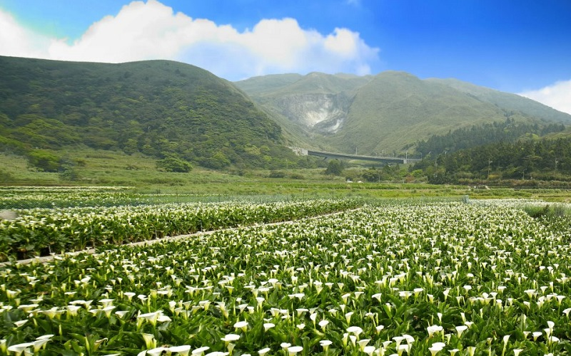
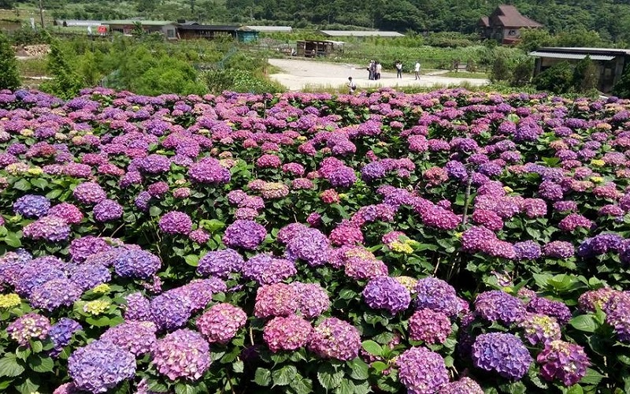
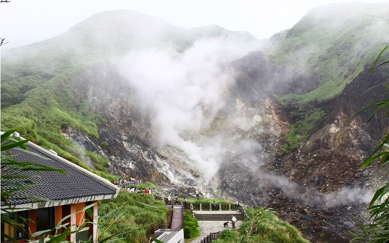
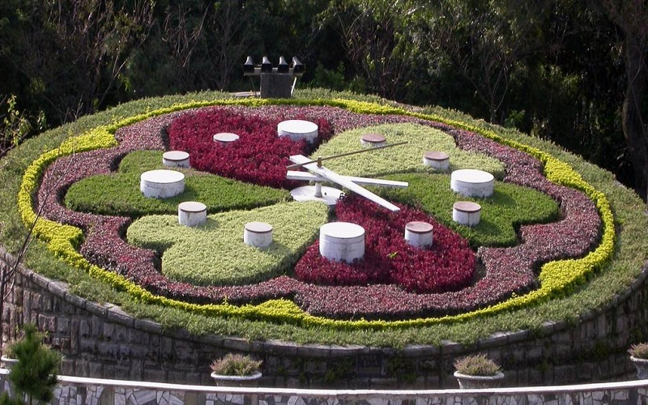
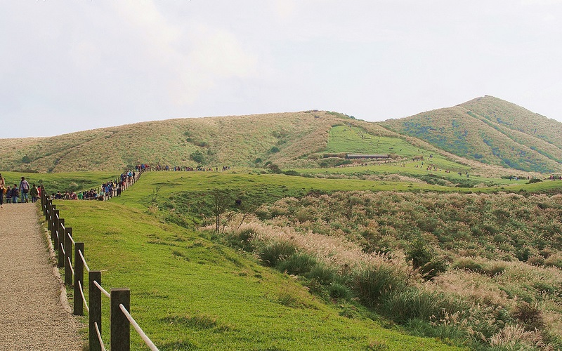
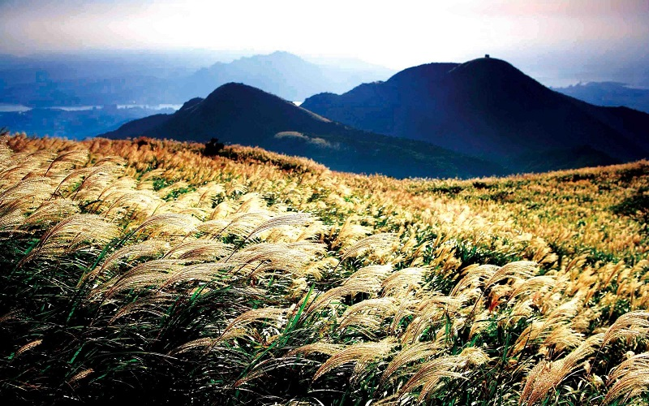

Yangmingshan National Park
Taipei City
Calla lily in Zhuzihu
    Yangmingshan National Park is located in the north of Beitou. The National Park is famous for its sulfur deposits,
, flora, fumaroles, and hiking trails, including Taiwan's tallest dormant volcano, Seven Star Mountain.
The park is characterized by a large clock made of flowers with a diameter of 22 feet, and the best place for flower
viewing is Zhuzihu. The Zhuzihu Calla Lily Festival will kick-off at the end of March every year. After the
Calla Lily Festival is the season for hydrangea. Daton mountain is a active volcanic group. Althought the last eruption
occured at about 5000 years ago, the gas fumaroles are still explusing sulfur deposits nowadays. The best season of the
Daton National Park is October and November, when the miscanthus blooms. Qingtiangang is a lava terrace.
Because of its flat terrain, a ranch was established and the area was used as a pasture for grazing cattle during the
Japanese occupation. The scenery of the broad glassland is one of the most popular tourist spot in this region.
- Official website: http://english.ymsnp.gov.tw/index.php?option=com_content&view=featured&gp=0&Itemid=104
- Best seasons: Spring
- Transportation:
Take the MRT to Beitou Station and take bus #S9 or #129